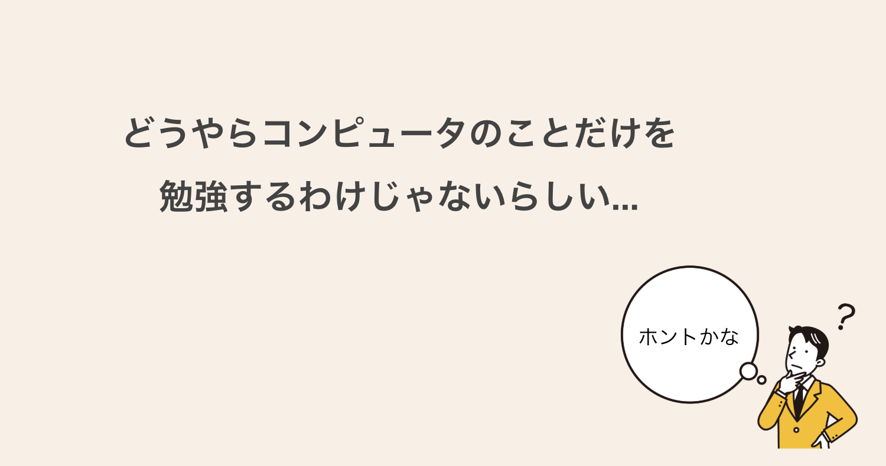
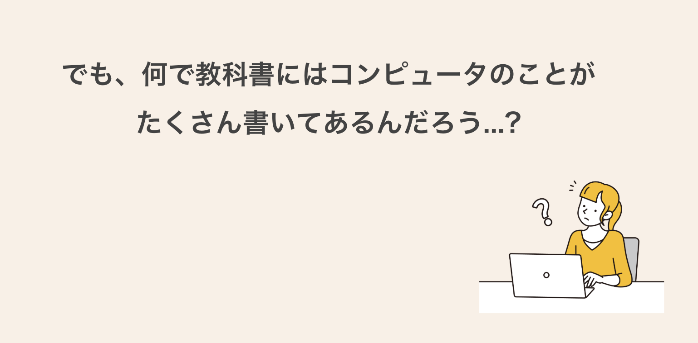
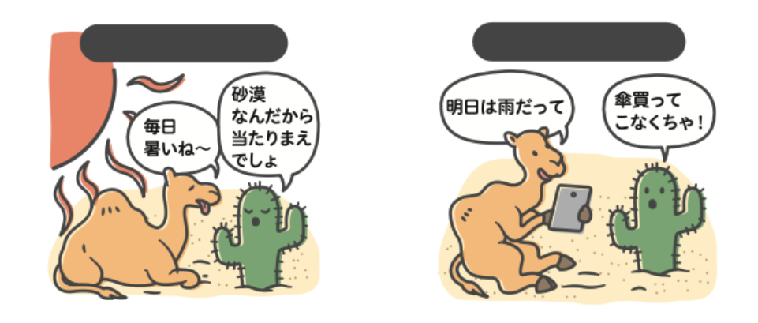
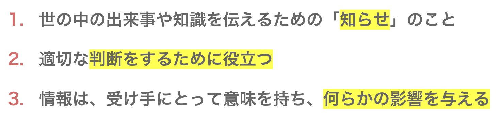
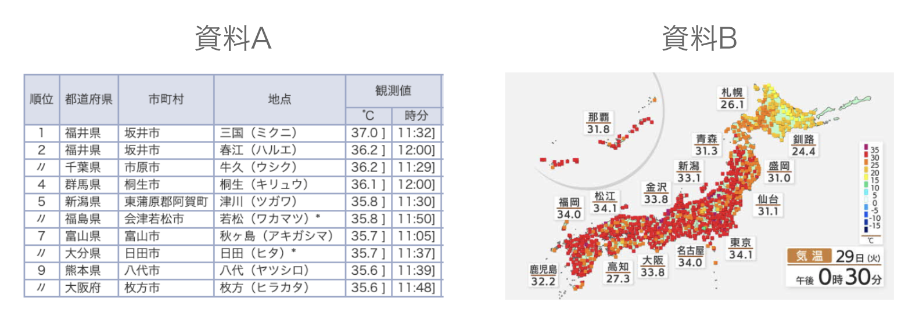
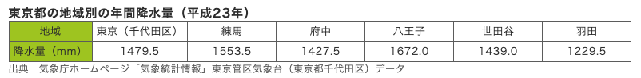
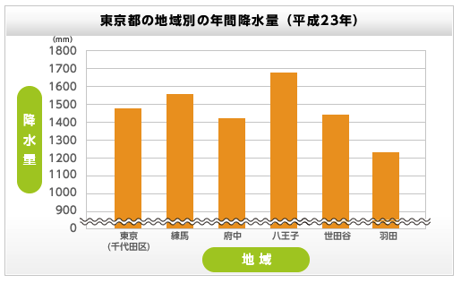

普段何気なく情報という言葉を耳にしますが、情報＝コンピュータと思っていませんか？
情報とはもっと広い意味を持つ言葉です。この時間はこれから学習する情報について一緒に考えて行きましょう。
.
.
次の2つのイラストを見て、この差を考えてみよう...
情報がどういうものだかわかってきましたか？
.
「暑いね〜」という会話は今の状態を表現しているだけですが、「明日は雨だって」という会話は傘を買いに行く、持って出かける等の行動につながる内容です。
ですから、「明日は雨」という発言は情報であると言えます。



つまり、データとして並べても人はすぐには理解しづらい。
でも、グラフなどにすると一目瞭然でわかりやすくなる。
わかりやすくするには工夫が必要 → それが情報デザイン
あなたは受験が終わったら欲しいものはありますか？
行きたいところはありますか？
やりたいことはありますか？
.
.
あなたは何について事前に調べますか？
.
あなたは何について事前に調べますか？
-+-+-+-+-+-+-+-+-+-+-+-+-+-+-+-+-+-+-+-+-+-+-+-+-+-+-+-+-+-+-+-+-+-+
人は何かをするとき、情報を集めます。
ではその情報はどこから手に入れてきますか？
いろいろな方法があるけど、一番使っているのは...？
私たちは日常的にWebサイト（ホームページ）を使って情報を入手しています。
Webデザイン制作の参考になる国内のステキなサイト集「SANKOU！」
https://sankoudesign.com/
でも、どうして情報とコンピュータは相性が良いのだろうか？
コンピュータの登場以前と以後で比べながら考えてみよう。
みんなで生成AIコースを使ってまとめてもよいです
相手に正しく判断してもらうには情報を工夫して見せる必要があります。
今回触れた、データ→グラフ化だけでなくそれ以外の工夫についても学習します。
-+-+-+-+-+-+-+-+-+-+-+-+-+-+-+-+-+-+-+-+-+-+-+-+-+-+-+-+-+-+-+-+-+-+
ノーコードWebサイト制作ツール「STUDIO」について
これからプログラムを書かなくてもWebサイトが作れるSTUDIOというツールを使ってWebサイトを作りながら情報デザインについて学習を進めていきます。
次回の授業までにサインアップ（初期登録）を済ませておいてください。
手順
時間は5分もかかりませんが、必ず事前に確認しておいてください。
もしも、上手く登録できなかったり、質問がある場合は先生まで